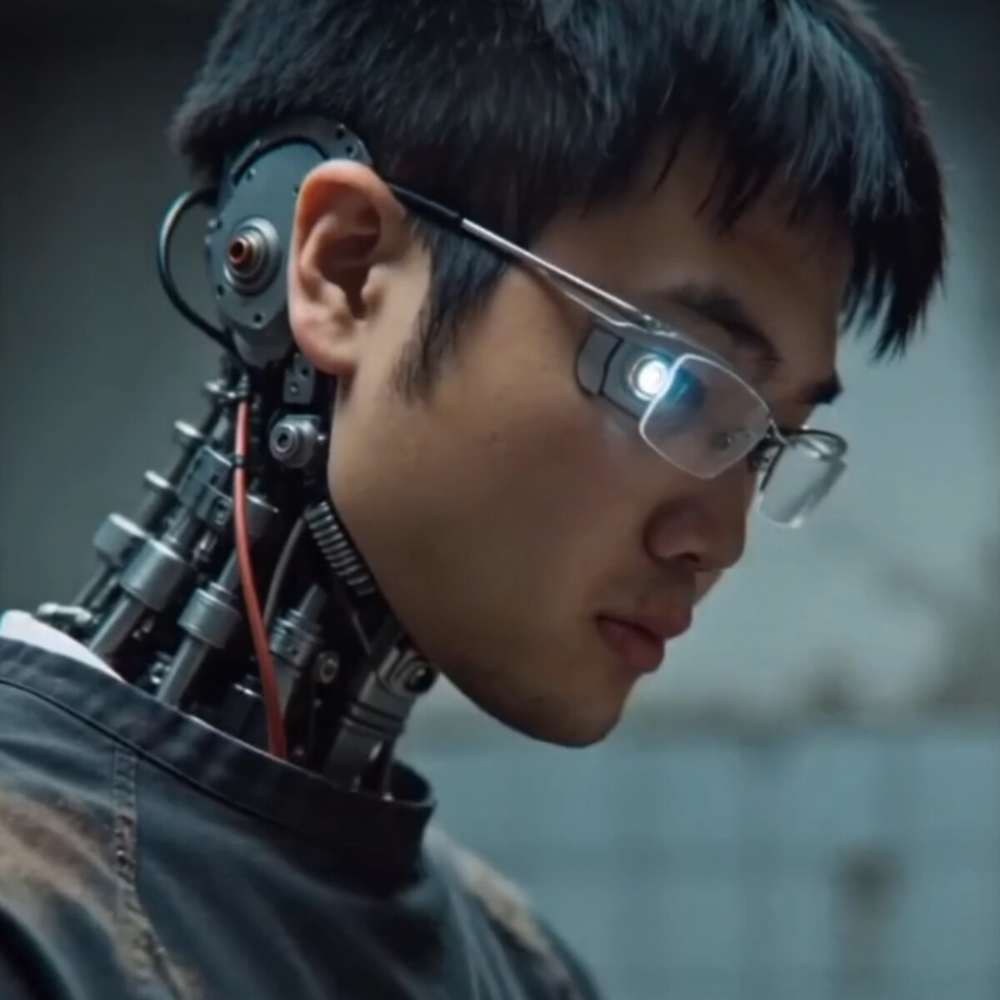

Co-founder
Artistic Director
Xuan Shen / 沈轩
Spatial design, curatorial practice, and public creative programs.
People
VIRTURA presents shared works, public programs, and member practices with explicit credit boundaries. Independent works remain credited to their artists.
Core Roles
Spatial design, curatorial practice, and public creative programs.
Spatial image, visual system, live performance structure, and archive-to-public publishing.
Electronic music, sound systems, and spatial audiovisual performance contexts.
Artist Context


Focuses on immersive installation, spatial storytelling, and perceptual experience through 3D visual systems and interaction.